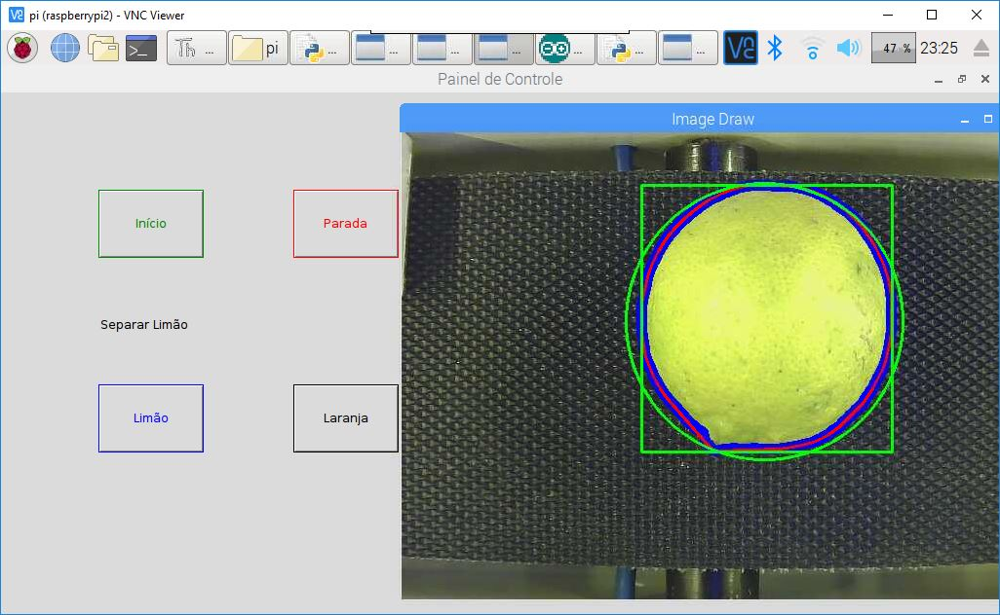

Sistema de Visão Computacional
Sistema de Seleção deProdutos Agrícolas através da Visão Computacional
Proposta de Trabalho
-
A crescente inovação do setor tecnológico ainda se encontra barrada em alguns limitantes que são periodicamente superadas. Ocasionando a criação de novas
tecnologia, como no caso da visão computacional, que é pautado nesse trabalho. A iniciativa da criação do sistema de visão computacional, vem da necessidade que se
faz das maquinas interagirem de uma melhor forma com o meio a qual se inserem. Este trabalho demonstra o uso da visão computacional utilizando a com programação
Python e a biblioteca Opencv. O projeto proposto utiliza-se de uma esteira que conduz um determinado produto para uma área de seleção, sendo essa estrutura integrada
com uma câmera direcionada para produto a ser inspecionado. O produto é separado por uma estrutura móvel que separa produtos de acordo com parâmetros prédefinidos.
Para exemplificar a aplicação, escolhemos a inspeção de duas espécies de frutas a laranja e o limão, separadas utilizando o pelo tamanho como parâmetro de
seleção. Em uma das saídas de seleção foi acrescentada como etapa final de seleção a utilização de uma célula de carga para a pesagem. O sistema montado de forma
didática utilizou-se de uma Raspberry Pi 3 modelo B para o processamento das imagens e uma câmera USB de 60fps. Tal sistema permitiu separar frutas com
tamanhos variados tamanhos mínimos de 4,7 cm (classe I Limão) até 14,3 cm para Laranja, capacidade de distinção entre os tamanhos em 10 % de variação do diâmetro.
A velocidade ensaiada foi de 4 frutas/minuto. O uso de um processador de maior capacidade e melhorias no sistema de captação de imagens vislumbram um melhor
desempenho do sistema que se utiliza softwares livres e não atrelado a um hardware específico.
Palavras-chave: Visão Computacional. Opencv. Citricultura Paulista.Agroindústria. Automação Industrial.
Free Software and Open Hardware
-
Pense em si e nos demais usuários da rede mundial de computadores,
seja livre para compartilhar, republicar, distribuir os código e
conteúdos disposto nesse repositório. Com esses preceitos baseio
as diretrizes desse trabalho e dos outros do futuro:
1 Permitir alterações
2 Ser quando possível grátis ou semi grátis
3 Compatibilidade com o máximo de dispositivos
4 Compartilhamento do código base
Bem Vindo -- Welcome -- Bienvenido -- Accueil -- желанный

© Copyright 2018 Gabriel Charlui.